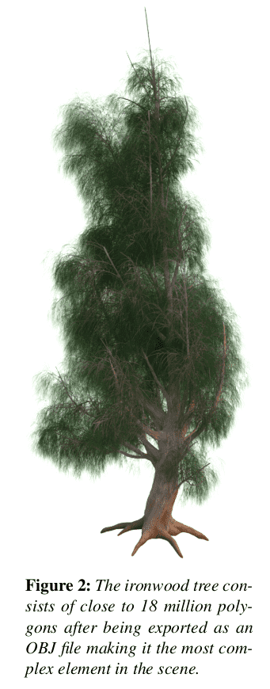
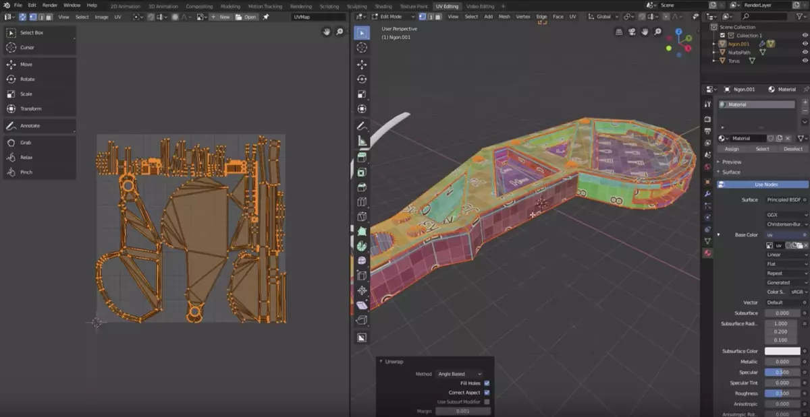
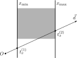
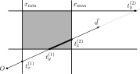
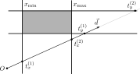
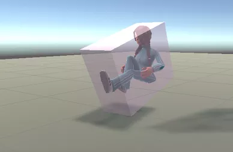
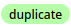
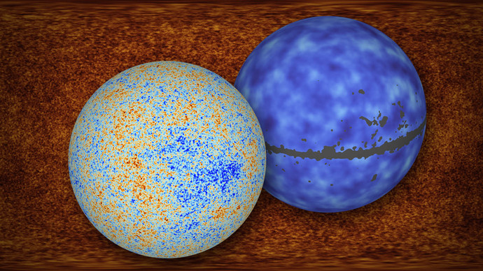

The malicious actors execute a payload to gain a remote shell
Being an ESA machine, the webserver is likely connected with the internal network
ESA and EUMETSAT develop weather satellites like METEOSAT and MetOp, and their data likely land on some of the computers in this schema
Lesson 9
Calcolo numerico per la generazione di immagini fotorealistiche
Maurizio Tomasi maurizio.tomasi@unimi.it
Polygonal meshes
Moana island scene
Moana island scene

The challenges of Releasing the Moana Island Scene (Tamstorf & Pritchett, EGSR 2019)
Polygonal meshes
The scenes seen in the previous slides are formed by the combination of many simple shapes.
Managing scenes with millions of primitive shapes requires sophisticated memory management and data structures.
Today we will discuss triangular meshes, in which the elementary shape is precisely a planar triangle. (The same discussion can be made for quadrilateral meshes, but for simplicity we will focus on triangles).
Storing triangles
We have seen how to implement the code to calculate the intersection between a ray and a triangle in the general case where the triangle is encoded by its three vertices A, B, and C.
Unlike our approach for spheres and planes (where we applied transformations to canonical shapes), meshes require a more direct storage method: storing a 4×4 transformation and its inverse requires 32 floating-point numbers (128 bytes at single precision).
Storing the three coordinates of a triangle requires only 3×3×4 = 36 bytes…
…but we can do better!

Mesh storage
In a triangle mesh, the vertices are stored in an ordered list P_k, with k = 1\ldots N.
Triangles are represented by a triplet of integer indices i_1, i_2, i_3 which represents the position of the vertices P_{i_1}, P_{i_2}, P_{i_3} in the ordered list.
If 32-bit integers are used to store the indices, each triangle requires 3×4 = 12 bytes.
This approach is highly efficient, since vertices are typically shared by multiple adjacent triangles. And it’s easier to move vertices in 3D space!
Model: 44,000 vertices, 80,000 triangles.
(u, v) Coordinates
In the case of an arbitrary mesh, there are infinitely many possible ways to create a (u, v) mapping on the surface.
In meshes, each element of the mesh is made to cover a specific portion of the entire space [0, 1] \times [0, 1].
3D modeling programs like Blender allow you to modify the (u, v) mapping of each element.

Ray Intersection
Calculating the intersection between a mesh and a ray is not easy to implement.
The bottleneck in solving the rendering equation is typically the time spent on ray-shape intersections.
As the number of shapes increases, the computation time necessarily increases as well as O(N).
An effective optimization is the use of bounding boxes, which rely on the concept of “axis-aligned box”. Let’s start from the latter.
Axis-aligned boxes
Axis-aligned boxes
The cubic shape is not very interesting in itself, but it lends itself to some optimizations relevant for polygonal meshes.
Due to its particular purpose, we will treat the case of cubes using different conventions than those made for spheres and planes:
- We will not limit ourselves to the unit cube with a vertex at the origin…
- …but we will assume that the faces are parallel to the coordinate planes.
These assumptions are referred to in the literature as axis-aligned bounding box (AABB).
In-memory representation
A box with edges aligned along the xyz axes can be defined by the following quantities:
- The minimum and maximum x values;
- The minimum and maximum y values;
- The minimum and maximum z values.
Equivalently, you can store two opposite vertices of the parallelepiped, P_m (minimum values of x, y and z) and P_M (maximum values).
Ray-AABB intersection
Let’s write the ray as r: O + t \vec d.
The calculation for the 3D case is very similar to the 2D case, so let’s consider the latter:

Ray-AABB intersection
Let F_i be a generic point on a face of the box perpendicular to the i-th direction (six planes in total), which will have coordinates
F_0 = (f_0^{\text{min}/\text{max}}, \cdot, \cdot), \quad F_1 = (\cdot, f_1^{\text{min}/\text{max}}, \cdot), \quad F_2 = (\cdot, \cdot, f_2^{\text{min}/\text{max}}).
In general, there are two ray-face intersection along the i-th coordinate, if we consider whole planes instead of the actual faces:
O + t_i \vec d = F^{\text{min}/\text{max}}_i\quad\Rightarrow\quad t_i^{\text{min}/\text{max}} = \frac{f_i^{\text{min}/\text{max}} - O_i}{d_i}.
Ray-AABB intersection
Each direction produces two intersections, so in total there are six potential intersections (one for each face of the cube).
But not all intersections are correct: they are calculated for the entire infinite plane on which the face of the cube lies.
It is therefore necessary to verify for each value of t if the corresponding point P actually lies on one of the faces of the cube.
Ray-AABB intersection
- In the case of the previous image, where the ray intersects the parallelepiped, the intervals [t^{(1)}_i, t^{(2)}_i] have a common section:

- The intersection of the intervals is an interval whose extremes correspond to the intersection points of the ray with the AABB.
Ray-AABB intersection
- In the case where the ray misses the parallelepiped, the intervals [t^{(1)}_i, t^{(2)}_i] are disjoint:

- Therefore, if the intersection of the intervals for the three axes gives the empty set, the ray does not hit the AABB.
Bounding boxes
Rendering complexity
Last week we implemented the
Worldtype, which contains a list of objectsWhen calculating an intersection with an object,
World.ray_intersectionmust iterate over all theShapes inWorldIf you increase the number of
Shapes tenfold, the time required to produce an image also increases tenfold……but even solving the rendering equation in simple cases can take hours!

This image contains three geometric shapes (two planes and a sphere), and was calculated in ~156 seconds by a code written in a compiled language (FreePascal).
Moana island scene
Optimizations
With our implementation of
World, the time required to compute an image is roughly proportional to the number of ray-shape intersections.But realistic scenes contain many shapes!
Moana island scene is a scene composed of ~15 billion basic shapes. The rendering time would be on the order of 25,000 years!
Now that we have described axis-aligned boxes, let’s move to the concept of axis-aligned bounding boxes, which provides a simple but effective optimization.

Axis-aligned bounding box
Axis-aligned bounding boxes (AABBs) are AABBs that delimit the volume occupied by objects.
They are widely used in computer graphics as an optimization mechanism.
The principle is as follows:
- For each shape in space, its AABB is calculated;
- When determining the intersection between a ray and a shape, it is first checked whether the ray intersects the AABB;
- If it does not intersect, we move on to the next shape, otherwise we proceed with the intersection calculation.
Usefulness of AABBs
AABBs are useful only for scenes made up of many objects. For simple scenes, they can introduce unnecessary overhead.
They are however very useful with triangle meshes and complex CSG objects.
If you want to support AABBs in your ray-tracer, you should add an
aabbmember to theShapetype to be used insideShape.rayIntersection:
AABB and meshes
AABBs are perfect for applying to meshes. (In this case they obviously do not apply to the individual elements, but to the mesh as a whole).
When loading a mesh, its AABB can be calculated by calculating the minimum and maximum values of the coordinates of all vertices.
In the case of the Oceania tree, the intersection between a ray and the 18 million elements would only occur for those rays actually oriented towards that tree.
Beyond AABBs
However, it is not always sufficient to use AABBs for meshes to be efficient.
Scenes are often almost completely occupied by a few complex objects, and in this case AABBs do not provide any advantage (as in the previous image).
However, there are several sophisticated optimizations that transform the problem of looking for ray-triangle hits from O(N) to O(\log_2 N). The most common acceleration structures are KD-trees and Bounding Volume Hierarchies (see this video by Sebastian Lague). They are both explained in the book by Pharr, Jakob & Humphreys.
Debugging
Introduction to Debugging
Last week you fixed your first bug, which concerned the incorrect orientation of the images saved by your code.
In general, a bug is a problem in the program that makes it work differently than expected.
It is very important to have a scientific approach to bug management! In the next slides I will give you some general guidelines.
Fault, Infection, and Failure
Zeller’s excellent book Why Programs Fail: A Guide to Systematic Debugging categorizes the manifestation of a bug into three distinct stages:
- Fault: an error in the way the code is written;
- Infection: a certain input “activates” the fault and alters the value of some variables compared to the expected case;
- Failure: the outcome of the program is wrong, either because the results are incorrect, or because the program crashes.
The bug lies in the initial fault, but if there is no infection or no failure, it is difficult to notice it!
Example
In your second-year, you implemented code that calculates the value of
\int_0^\pi \sin x\,\mathrm{d}x
using Simpson’s rule:
\int_a^b f(x)\,\mathrm{d}x \approx \frac{h}3 \left[f(a) + 4\sum_{i=1}^{n/2} f\bigl(x_{2i-1}\bigr) + 2\sum_{i=1}^{n/2 - 1} f\bigl(x_{2i}\bigr) + f(b)\right].
Often the implementation is wrong even though the result is correct (\int = 2)!
\int_a^b f(x)\,\mathrm{d}x \approx \frac{h}3 \left[f(a)+ {\color{red}{4}}\sum_{i=1}^{n/2} f\bigl(x_{2i-1}\bigr) + {\color{red}{2}}\sum_{i=1}^{n/2 - 1} f\bigl(x_{2i}\bigr) + f(b)\right].
Often students swap the 4 with the 2.
This leads to an infection: the value of the expression in square brackets is wrong.
This leads to a failure: the result of the integral is wrong.
Of all the cases, this is the simplest: it is immediately obvious what the problem is!
\int_a^b f(x)\,\mathrm{d}x \approx \frac{h}3 \left[f(a)+ 4\sum_{i=1}^{\color{red}{n/2}} f\bigl(x_{2i-1}\bigr) + 2\sum_{i=1}^{\color{red}{n/2 - 1}} f\bigl(x_{2i}\bigr) + f(b)\right].
Sometimes students terminate one of the two summations too early (they forget the last term) or too late (they add an extra term).
In the case of \int_0^\pi \sin x\,\mathrm{d}x, the last term of the summation is for x \approx \pi, so it is very small: there is an infection, but if you print only a few significant digits on the screen, the result may be rounded to the correct value, and therefore there is no failure.
\int_a^b f(x)\,\mathrm{d}x \approx \frac{h}3 \left[{\color{red}{f(a)}}+ 4\sum_{i=1}^{n/2} f\bigl(x_{2i-1}\bigr) + 2\sum_{i=1}^{n/2 - 1} f\bigl(x_{2i}\bigr) + {\color{red}{f(b)}}\right].
Sometimes students forget to add f(a) and/or f(b), or they multiply them by 2 or 4.
However, in the case of \int_0^\pi \sin x\,\mathrm{d}x, the value of the expression in square brackets is still correct because f(0) = f(\pi) = 0.
In this case there is a fault but there is no infection nor a failure: this is the most difficult case to identify!
Duplicate Issues
It is very common for the same fault to lead to different failures: this depends on the input data, the type of action being performed with the program, etc.
It is therefore very common for users to open different issues that are however caused by the same fault.
Example: a crash in Julia is caused by the combination of two previously reported issues, which at first glance did not seem related.
GitHub allows you to assign the Duplicated label to issues:

How to Report Issues
When you observe a failure and want to open an issue, you must indicate:
- List of actions that led to the failure (including all inputs!)
- Program output
- Description of the expected behavior and the observed behavior instead
This is because the developer must be able to reproduce the failure in a controlled environment to identify the fault that caused it.
If a user reports an issue to you without some of these things being clear, do not hesitate to ask for more details.
GitHub allows you to configure an issue template.
Identifying Faults Scientifically
- Observe/reproduce a failure
- Formulate a hypothesis about the fault that caused the failure
- Use the hypothesis to predict where an infection might be visible
(e.g., using a debugger or
printstatements). If the observation contradicts the prediction, refine the hypothesis.
We have already seen this pattern many times with LLMs: you must verify claims (ChatGPT’s output, reason for a fault) before assuming they are true!
Debugging tools
| Type | Examples |
|---|---|
| Symbolic debuggers | GDB, LLDB |
| Memory checkers | Memcheck |
| Dynamic analysis | Valgrind |
| Record-and-replay | rr, UDB |
| Fuzzing debuggers | AFL++, libFuzzer |
Using LLMs to debug codes
Today, LLMs can be very effective in finding some types of errors
Example of a prompt:
The following C++ code should print all the numbers from 0 to 10 in steps of 2, so the expected output should be 0, 2, 4, 6, 8, 10. However the code fails to print 10: for (int i{}; i < 10; ++i) { println("{}", i); } Can you help me in understanding why it does not work?More advanced LLMs can acts as agents: they interact with your build system to modify the code, compile it, run tests, and iterate. Examples: Claude Code, Gemini Code Assist…
Are they worth it?
Sometimes, they can be very useful!
However, they have the tendency to overdo changes
As described in the article Coding models are doing too much, the authors purposefully injected some simple bugs (e.g., changing
<into<=) and then asked the LLM to fix it. The result often overwrote the whole function instead of just fixing that single character!As I have said repeatedly, never trust a LLM before having verified its suggestions!
Ethical considerations about bugs and bug reports
Claude Mythos Preview
Anthropic is a key player in the LLM world. They produce very effective LLM agents like Code, Sonnet, Opus, etc.
In April 2026, they announced their new product, Claude Mythos, which seems to have incredible potential:
This new tool has huge ethical implications, which Anthropic addressed by starting the Glasswing project.
Project Glasswing
Instead of releasing Claude Mythos to the general public, they decided to freely grant its usage (100 M$ tokens) to “selected partners” like Microsoft, Apple, NVIDIA, The Linux Foundation, Broadcom, etc.
Each partner will use Mythos to find and fix bugs in their own codebase
The general public won’t have access to Claude Mythos: this prevents malicious actors (hackers) from compromising critical systems
How can hackers exploit a bug?
Consider this code:
The number
1024was probably picked as a very large limit, because in normal conditions the program will never read more than this.However, if you pass the wrong input and it’s too large, you will overwrite the memory and likely cause a segmentation fault
This turns out to be an annoyance, as the program crashes. But…
How can hackers exploit a bug?
…what if the user is a malicious actor who wants to take control of the machine?
A possible hacking technique here would be to pass 1024 floating point numbers, followed by some specific machine code (the payload)
The
buffervariable resides on the stack, where other crucial information about the program flow is saved (return address of the function). By carefully injecting specific values after the 1024float-s, the hacker can overwrite the return address and force the program to execute arbitrary code that can grant the hacker access to the machine.This bug is no longer an annoyance: it is a security hole!
How does this affect you?
Even seemingly innocent bugs can have dangerous consequences and open security holes.
LLMs did not create this problem, but by having the potential to discover several of them all at once and with relatively little effort, the problem is exhacerbated.
You might think this is relevant only for operating system developers, but you are just targeting scientific software.
Do not be fooled! All of this can affect you as well!
Let’s imagine a possible example
Suppose you developed a library to perform conversion between coordinate systems (Cartesian, spherical, cylindrical, etc.)
ESA wants to publish an interactive 3D viewer of Planck’s maps of the Cosmic Microwave Background and internally uses your library in a web app

However, your library has a zero-day vulnerability, i.e., a bug that nobody discovered yet. This bug works similarly to what we just described: it lets malicious actors run arbitrary code on the machine hosting the web app.
Once a malicious actor has access to satellite data, several bad things can happen:
Access to raw data before they are processed and filtered (e.g., to find minute erosion signs in dams or gas reservoirs)
Modification/removal of existing data (e.g., hiding hints that a hurricane is forming near a densely inhabited area)
All of this because of a bug in a seemingly harmless numerical library any of us could have developed!
Cyberwarfare
In modern times, a new idea of warfare emerged: the “cyberwarfare”
One of the most studied cases in literature is Russia, as its leaders have repeatedly talked about this concept (the so-called “Gerasimov doctrine”)
With cyberwarfare, the boundary between “war” and “pace” becomes less definite
It is well explained in the book Brigate russe (Marta Ottaviani, ed. Bompiani)
Cyberwarfare
In cyberwarfare, you employ cyber capabilities to attack your enemy:
- Spread of fake news through social media and mass media
- Espionage and sabotage of critical infrastructure
- → Cyberattacks ←
Historically, Russia was the first country to invest in this because of the possibility to fill the huge gap with the raw military power of other countries like China and the US (cyberwarfare is much cheaper!)
Examples of cyberwarfare
Russia attacked Estonia in 2007 because of the relocation of a statue from a public square to a military cemetery. This is considered to have been the first true general test of “cyberwarfare”
Three weeks before Russia invaded Georgia in 2008, Russian cyberattacks targeted English local media and Government sites to disrupt the flow of information regarding the conflict
In the years 2014–2015, Russia targeted Ukraine with cyberattacks to halt the Maidan revolution and to affect the (internationally unrecognized) referendum in Crimea
How to prevent these attacks?
EU is allocating significant resources in cyberdefense:
- Cyber Resilience Act (CRA): mandatory security requirements for digital products sold in Europe (December 2024)
- Cyber Solidarity Act (CSA): ~1 G€ to fund a system that uses AI to spot cyberattacks as soon as possible (Cybersecurity Alert System), implements a system that can substitute essential systems compromised by an attack (Cybersecurity Emergency Mechanism), and establishes a mechanism to review past incidents (Cybersecurity Incident Review Mechanism)
Apart from these institutional measures, what can one do to improve cybersecurity?
Bug reporting
The potential impact of bugs in one’s own code cannot be determined easily
It is extremely important to fix bugs in your code…
…but, as we just saw, it is equally important to report bugs to others as well!
Open-source projects usually encourage people to provide pull requests to fix issues. But what about closed-source programs like Microsoft Windows, Adobe Photoshop, Google Sheet…?
When things go wrong
18 year old guy arrested for reporting a shamefully stupid bug in the new Budapest e-Ticket system
County pays $600,000 to pentesters it arrested for assessing courthouse security (security experts were asked to review the IT system of a Iowa court and were jailed because of this.)
Students and lecturer in FreeHour hacking case get presidential pardons (four students in Malta reported a vulnerability and were jailed.)
I found a Vulnerability. They found a Lawyer. (A diving instructor found a vulnerability on the website of an insurance company and reported it, only to be threatened with legal consequences.)
Report bugs in commercial software
Hopefully, these failures in handling bug reports are becoming rarer and rarer
In general, do not report the bug on social media or your website! Think that you are protecting users, not only the firm. Instead, inform the firm through private channels (big firms usually have a “Vulnerability Disclosure Policy”, which offer legal protections for contributors)
You should give them some time to acknowledge the bug and fix it. After a grace period (usually 90 days), you can probably disclose the bug
Some firms organize bug bounty programs